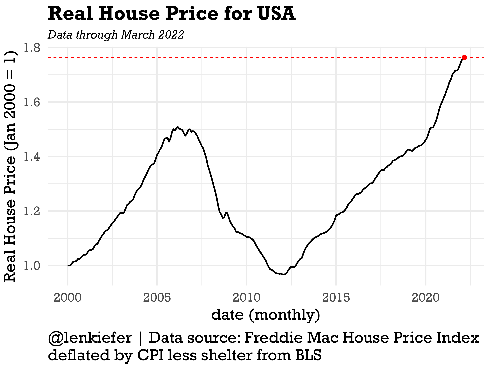
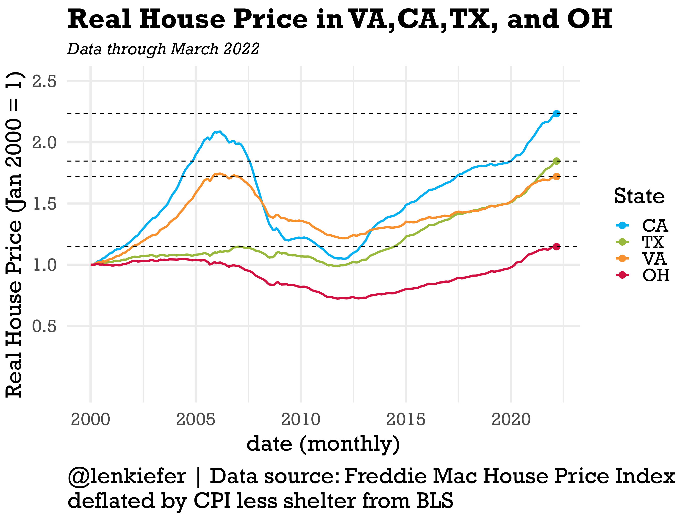
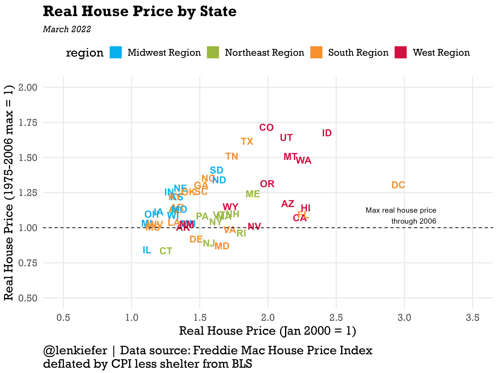
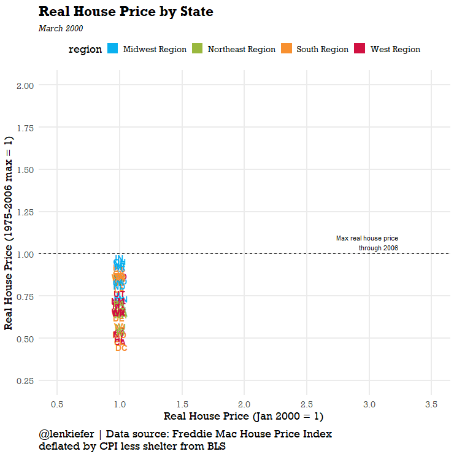
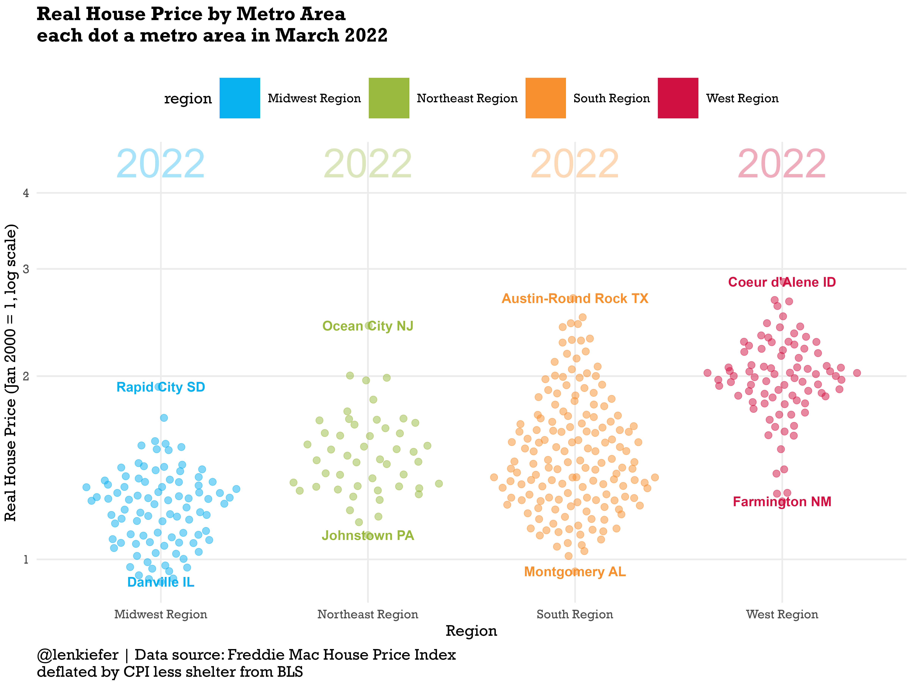
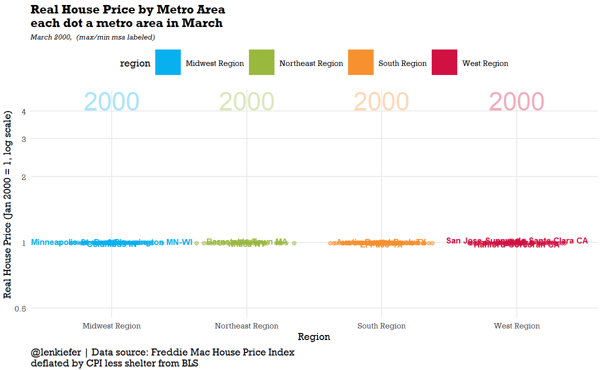

Consider recent house price trends.

After adjusting for inflation, U.S. house prices have increased 76% since January 2000. Just over the past two years, since March of 2020, real house prices have increased over 18%. So even with consumer price inflation that is the highest in about 40 years, house price growth has been even stronger.
National trends understate how strong house prices growth has been in certain states. Let’s take a look at a few specifica states, Virginia, Ohio, Texas (where I have lived) and California.

California has seen very strong recent growth and is now far above its mid-2000s peak. Texas has also seen strong recent growth, and did not have much of an increase in prices in the mid-2000s. Virginia, which is somewhat dominated by the northern Virginia D.C. suburbs has posted solid growth, but remians below its mid-2000s peak. And Ohio, like some other states in the Midwest has been tracking higher, but at a much more measured pace.
I think it is interesting to compare the level of real house prices to how high prices got in the mid-2000s. The scatterplot blow compares the real house price index relative to January 2000 on the x axis to the maximum the real house price index reached for that state prior to 2007. Among the 50 states plus D.C. only seven states (aforementioned VA along with CT, DE, IL, MD, NJ and RI) are below their mid-2000s peak.
I’ve color-coded the states by region and you can see a clear pattern. States in the Midwest are down in the lower left, posting slower overall growth and less growth relative to their mid-2000s peak. The Northeast is stuck in the middle, while the South and especially the west are up in the upper right, indicating they are both well above their mid-2000s peak and far above where they were in January 2000.

We can animate to see the evolution over time.

We can also look at it by metro area. There are too many to label, but we can use a beeswarm plot to visualize the distribution.

And we can animate it to see the evolution over time.

R code for plots
See here for R code to make all the plots.
################################################################################
# load libraries ----
################################################################################
library(tidyverse)
library(lubridate)
library(gganimate)
library(data.table)
library(extrafont)
library(patchwork)
library(ggbeeswarm)
theme_len <- function(font="Arial", bs=24,...){
theme_minimal(base_size=bs,base_family=font,...) %+replace%
theme(plot.caption=element_text(hjust=0,size=rel(1),margin=margin(10,0,0,0)),
plot.title=element_text(size=rel(1.25),face="bold",hjust=0,
margin=margin(0,0,5,0)),
plot.subtitle=element_text(face="italic",hjust=0,
margin=margin(5,0,10,0)
,size=rel(0.75)
),
plot.background=element_rect(fill="white",color=NA),
panel.background=element_rect(fill="white",color=NA),
plot.margin=margin(0.2,0.2,0.2,0.2,"cm")
)
}
# color scales ----
# Function for colors ----
# adapted from https://drsimonj.svbtle.com/creating-corporate-colour-palettes-for-ggplot2
#####################################################################################
## Make Color Scale ----
#####################################################################################
my_colors <- c(
"green" = rgb(103,180,75, maxColorValue = 256),
"green2" = rgb(147,198,44, maxColorValue = 256),
"lightblue" = rgb(9, 177,240, maxColorValue = 256),
"lightblue2" = rgb(173,216,230, maxColorValue = 256),
'blue' = "#00aedb",
'red' = "#d11141",
'orange' = "#f37735",
'yellow' = "#ffc425",
'gold' = "#FFD700",
'light grey' = "#cccccc",
'purple' = "#551A8B",
'dark grey' = "#8c8c8c")
my_cols <- function(...) {
cols <- c(...)
if (is.null(cols))
return (my_colors)
my_colors[cols]
}
my_palettes <- list(
`main` = my_cols("blue", "green", "yellow"),
`cool` = my_cols("blue", "green"),
`cool2hot` = my_cols("lightblue2","lightblue", "blue","green", "green2","yellow","gold", "orange", "red"),
`hot` = my_cols("yellow", "orange", "red"),
`mixed` = my_cols("lightblue", "green", "yellow", "orange", "red"),
`mixed2` = my_cols("lightblue2","lightblue", "green", "green2","yellow","gold", "orange", "red"),
`mixed3` = my_cols("lightblue2","lightblue", "green", "yellow","gold", "orange", "red"),
`mixed4` = my_cols("lightblue2","lightblue", "green", "green2","yellow","gold", "orange", "red","purple"),
`mixed5` = my_cols("lightblue","green", "green2","yellow","gold", "orange", "red","purple","blue"),
`mixed6` = my_cols("green", "gold", "orange", "red","purple","blue"),
`grey` = my_cols("light grey", "dark grey")
)
my_pal <- function(palette = "main", reverse = FALSE, ...) {
pal <- my_palettes[[palette]]
if (reverse) pal <- rev(pal)
colorRampPalette(pal, ...)
}
scale_color_mycol <- function(palette = "main", discrete = TRUE, reverse = FALSE, ...) {
pal <- my_pal(palette = palette, reverse = reverse)
if (discrete) {
discrete_scale("colour", paste0("my_", palette), palette = pal, ...)
} else {
scale_color_gradientn(colours = pal(256), ...)
}
}
scale_fill_mycol <- function(palette = "main", discrete = TRUE, reverse = FALSE, ...) {
pal <- my_pal(palette = palette, reverse = reverse)
if (discrete) {
discrete_scale("fill", paste0("my_", palette), palette = pal, ...)
} else {
scale_fill_gradientn(colours = pal(256), ...)
}
}
################################################################################
# geo stuff ----
# loaded from earlier blog posts
################################################################################
region <- fread("http://lenkiefer.com/img/charts_feb_20_2017/region.txt")
cbsa <- fread("http://lenkiefer.com/img/charts_feb_20_2017/cbsa.city.txt")
region2 <- left_join(region,cbsa,c("statecode"="state"))
region3 <- region2[,.N,.(cbsa,statecode,statename,region,division)]
################################################################################
# load house price data ----
################################################################################
dt <- fread("http://www.freddiemac.com/fmac-resources/research/docs/fmhpi_master_file.csv")
#####################################################################################
# define variables ----
#####################################################################################
dt <- data.table(dt)[,":="(hpa12=Index_SA/shift(Index_SA,12)-1,
hpa3 = (Index_SA/shift(Index_SA,3))**4 -1 ),
.(GEO_Type,GEO_Name)
][
,date:=as.Date(ISOdate(Year,Month,1))
][,decade:=paste0(floor(year(date)/10),"0s")]
################################################################################
# load consumer price data ----
# cpi less shelter CUSR0000SA0L2
################################################################################
df_cpi <- tidyquant::tq_get("CUSR0000SA0L2",get="economic.data",from="1975-01-01") %>%
rename(cpi=price) %>%
mutate(cpi12=cpi/lag(cpi,12)-1)
dt <- left_join(dt,df_cpi,by="date") %>% filter(Year>1999)
dt[,cpi1:=cpi/first(cpi),GEO_Name]
dt[,rhpi:=Index_SA/first(Index_SA)/(cpi1/first(cpi1)),GEO_Name]
################################################################################
# create cbsa (msa) and state data frames (data.table)
# useful for plotting
# create some additional variables
################################################################################
dt_msa <- dt[GEO_Type=="CBSA",]
dt_msa[,max_hpi:=max(Index_SA,na.rm=TRUE),GEO_Name]
dt_msa[,last_hpi:=last(Index_SA,na.rm=TRUE),GEO_Name]
dt_msa[,max_rhpi:=max(rhpi,na.rm=TRUE),GEO_Name]
dt_msa[,max_rhpi06:=max(ifelse(Year>2006,NA,rhpi),na.rm=TRUE),GEO_Name]
dt_msa[,last_rhpi:=last(rhpi,na.rm=TRUE),GEO_Name]
dt_state <- dt[GEO_Type=="State",][Year>1999,]
dt_state[,max_hpi:=max(Index_SA,na.rm=TRUE),GEO_Name]
dt_state[,max_rhpi:=max(rhpi,na.rm=TRUE),GEO_Name]
dt_state[,last_hpi:=last(Index_SA,na.rm=TRUE),GEO_Name]
dt_state[,max_hpi06:=max(ifelse(Year>2006,NA,Index_SA),na.rm=TRUE),GEO_Name]
dt_state[,max_rhpi06:=max(ifelse(Year>2006,NA,rhpi),na.rm=TRUE),GEO_Name]
dt_state[,last_rhpi:=last(rhpi,na.rm=TRUE),GEO_Name]
dt_msa2 <- left_join(dt_msa,mutate(region3,cbsa=as.character(cbsa)),
by=c("GEO_Code"="cbsa"))
dt_state2=left_join(dt_state,region,by=c("GEO_Name"="statecode"))
dt2 <- bind_rows(dt[GEO_Name=="USA"][,region:="USA"],
dt_msa2,dt_state2)
# get one unique CBSA name from each region for plotting
mlist <- c("Abilene TX","Akron OH","Albany OR","Albany-Schenectady-Troy NY")
# Note set YOURDIRECTORY to a path where you want to save images
# YOURDIRECTORY
################################################################################
# make plots ----
# plot 1 ----
# plot time series plot of USA
################################################################################
ggplot(data=dt[GEO_Name=="USA",],
aes(x=date,y=rhpi))+
geom_line(size=1.1)+
theme_len(font="Rockwell")+
geom_point(data= .%>% .[date==max(date)],color="red",size=3)+
geom_hline(data= .%>% .[date==max(date)],color="red",aes(yintercept=rhpi),linetype=2)+
labs(x="date (monthly)",
y="Real House Price (Jan 2000 = 1)",
title="Real House Price for USA",
caption="@lenkiefer | Data source: Freddie Mac House Price Index \ndeflated by CPI less shelter from BLS",
subtitle="Data through March 2022")
ggsave(paste0("YOURDIRECTORY",
"rhpi_usa.png"),
height=6,width=8,
scale=1.25)
################################################################################
# make plots
# plot 2 ----
# plot 4 time series plot of 4 states
################################################################################
ggplot(data=dt_state2[GEO_Name %in% c("VA","CA","TX","OH"),],
aes(x=date,y=rhpi,color=fct_reorder(GEO_Name,-last_rhpi)))+
geom_line(size=1.1)+
theme_len(font="Rockwell")+
theme(panel.grid.minor.y=element_blank())+
scale_color_mycol(palette="mixed",reverse=FALSE,name="State ")+
geom_point(data= .%>% .[date==max(date)],size=3)+
geom_hline(data= .%>% .[date==max(date)],aes(yintercept=rhpi),linetype=2)+
scale_y_continuous(breaks=seq(0.5,3,.5),limits=c(0,2.5))+
labs(x="date (monthly)",
y="Real House Price (Jan 2000 = 1)",
title="Real House Price in VA,CA,TX, and OH",
caption="@lenkiefer | Data source: Freddie Mac House Price Index \ndeflated by CPI less shelter from BLS",
subtitle="Data through March 2022")
ggsave(paste0("YOURDIRECTORY",
"rhpi_4st.png"),
height=6,width=8,
scale=1.25)
################################################################################
# make plots
# plot 3 ----
# plot scatterplot by state
################################################################################
ggplot(data=dt_state2[Month==3& Year==2022],
aes(x=rhpi/max_rhpi06,y=rhpi,label=GEO_Name,color=region))+
scale_color_mycol(palette="mixed",reverse=FALSE)+
geom_text(key_glyph = "rect",size=5,fontface="bold")+
theme_len(font="Rockwell",bs=18) + guides(color = guide_legend(override.aes = list(size = 4)))+
theme(legend.position="top",
panel.grid.minor.x=element_blank(),
panel.grid.minor.y=element_blank(),)+
labs(x="Real House Price (1975-2006 max = 1)",
y="Real House Price (Jan 2000 = 1)",
title="Real House Price by State",
caption="@lenkiefer | Data source: Freddie Mac House Price Index \ndeflated by CPI less shelter from BLS",
subtitle="March 2022")+
scale_x_continuous(limits=c(0.5,2),breaks=seq(0,2,.25))+
scale_y_continuous(limits=c(0.5,3.5),breaks=seq(0,4,0.5))+
geom_vline(aes(xintercept=1),linetype=2)+
annotate(geom="text",x=1,y=3.25,label=" Max real house price \n through 2006 ",
vjust= -0.25,
hjust=1)+
coord_flip()
ggsave("YOURDIRECTORY/rhpi.png",height=6,width=8,
scale=1.25)
################################################################################
# make plots
# plot 4 ----
# plot animated scatterplot by state
################################################################################
gs2t <-
ggplot(data=dt_state2[Month==3],
aes(x=rhpi/max_rhpi06,y=rhpi,label=GEO_Name,color=region))+
geom_text(key_glyph = "rect",size=5,fontface="bold")+ scale_color_mycol(palette="mixed",reverse=FALSE)+
theme_len(font="Rockwell",bs=18) + guides(color = guide_legend(override.aes = list(size = 4)))+
theme(legend.position="top",
panel.grid.minor.x=element_blank(),
panel.grid.minor.y=element_blank(),)+
labs(x="Real House Price (1975-2006 max = 1)",
y="Real House Price (Jan 2000 = 1)",
title="Real House Price by State",
caption="@lenkiefer | Data source: Freddie Mac House Price Index \ndeflated by CPI less shelter from BLS",
subtitle="March {frame_time}")+
scale_x_continuous(limits=c(0.25,2),breaks=seq(0,2,.25))+
scale_y_continuous(limits=c(0.5,3.5),breaks=seq(0,4,0.5))+
geom_vline(aes(xintercept=1),linetype=2)+
annotate(geom="text",x=1,y=3.25,label=" Max real house price \n through 2006 ",
vjust= -0.25,
hjust=1)
animate(gs2t+coord_flip()+transition_time(Year),end_pause=20,width=740,height=740)
gganimate::anim_save(paste0("YOURDIRECTORY","hpi_comet.gif"))
################################################################################
# make plots
# plot 5 ----
# plot beeswarm by MSA
################################################################################
ggplot(dt_msa2[month(date)==3& Year==2022,],
aes(x=region, y=log(rhpi),color=region,label=GEO_Name)) +
geom_quasirandom(key_glyph = "rect",size=4,alpha=0.5)+
geom_text(data= . %>% .[GEO_Name %in% mlist,],
key_glyph = "rect",
aes(y=1.5,label=paste0(Year)),size=18,alpha=0.35)+
geom_text(data= .%>% .[rhpi ==Urhpi | rhpi==Lrhpi],size=6,fontface="bold")+
#geom_text(data= .%>% .[rhpi ==Urhpi | rhpi==Lrhpi],size=2)+
guides(color = guide_legend(override.aes = list(alpha=1)))+
scale_y_continuous(breaks=log(c(0.5,1,2,3,4)),
labels=exp)+
theme_len(font="Rockwell",bs=20)+
theme(legend.position="top",
panel.grid.minor.y=element_blank())+
scale_color_mycol(palette="mixed",reverse=FALSE)+
labs(y="Real House Price (Jan 2000 = 1, log scale)",
x="Region",
title="Real House Price by Metro Area\neach dot a metro area in March 2022",
caption="@lenkiefer | Data source: Freddie Mac House Price Index \ndeflated by CPI less shelter from BLS",
subtitle="")
ggsave("YOURDIRECTORY/beeswarm.png",height=6,width=8,
scale=2)
################################################################################
# make plots
# plot 6 ----
# plot animated beeswarm by MSA
################################################################################
gs2<-
ggplot(dt_msa2[month(date)==3,],
aes(x=region, y=log(rhpi),color=region,label=GEO_Name)) +
geom_quasirandom(key_glyph = "rect",size=4,alpha=0.5)+
geom_text(data= . %>% .[GEO_Name %in% mlist,],
key_glyph = "rect",
aes(y=1.5,label=paste0(Year)),size=18,alpha=0.35)+
geom_text(data= .%>% .[rhpi ==Urhpi | rhpi==Lrhpi],size=6,fontface="bold")+
guides(color = guide_legend(override.aes = list(alpha=1)))+
scale_y_continuous(breaks=log(c(0.5,1,2,3,4)),
labels=exp)+
theme_len(font="Rockwell",bs=20)+
theme(legend.position="top",
panel.grid.minor.y=element_blank())+
scale_color_mycol(palette="mixed",reverse=FALSE)+
labs(y="Real House Price (Jan 2000 = 1, log scale)",
x="Region",
title="Real House Price by Metro Area\neach dot a metro area in March",
caption="@lenkiefer | Data source: Freddie Mac House Price Index \ndeflated by CPI less shelter from BLS",
subtitle="March {frame_time}, (max/min msa labeled)")
animate(gs2+transition_time(Year),end_pause=20,
nframes=160,
width=1200,height=740)
gganimate::anim_save(paste0("YOURDIRECTORY","beeswarm.gif"))